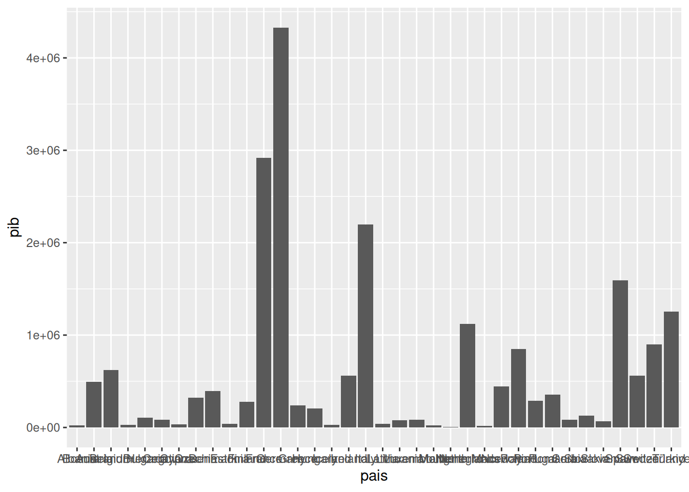
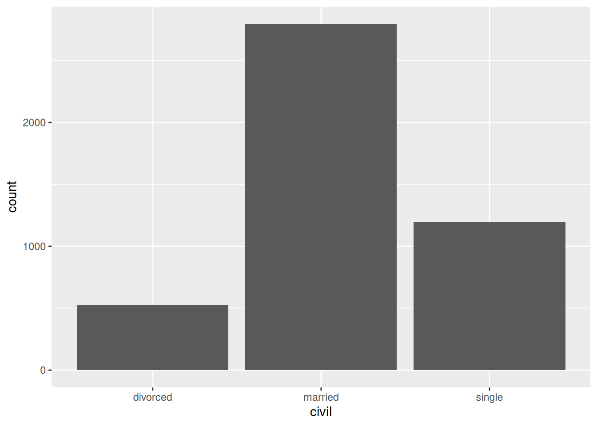
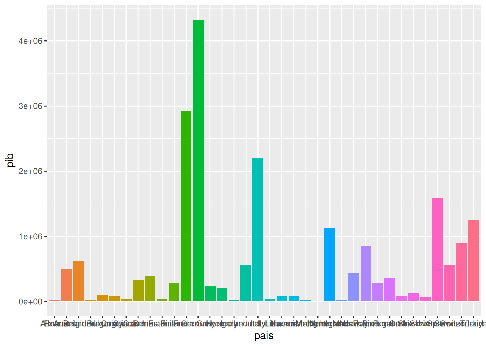
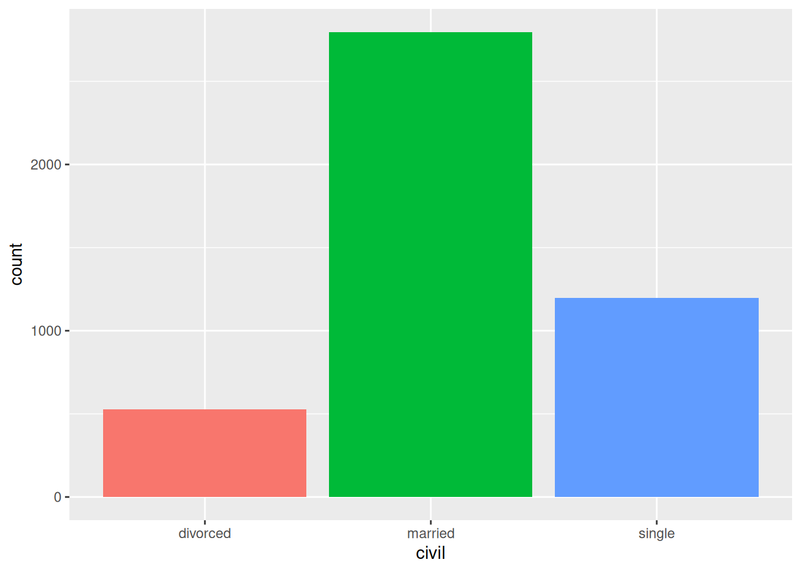
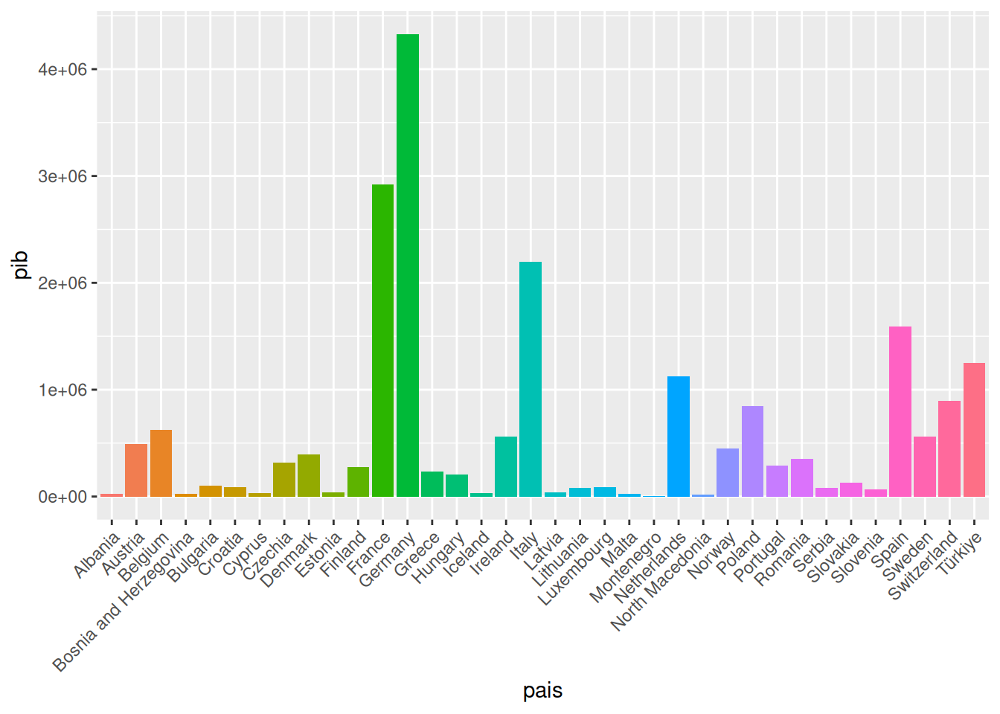
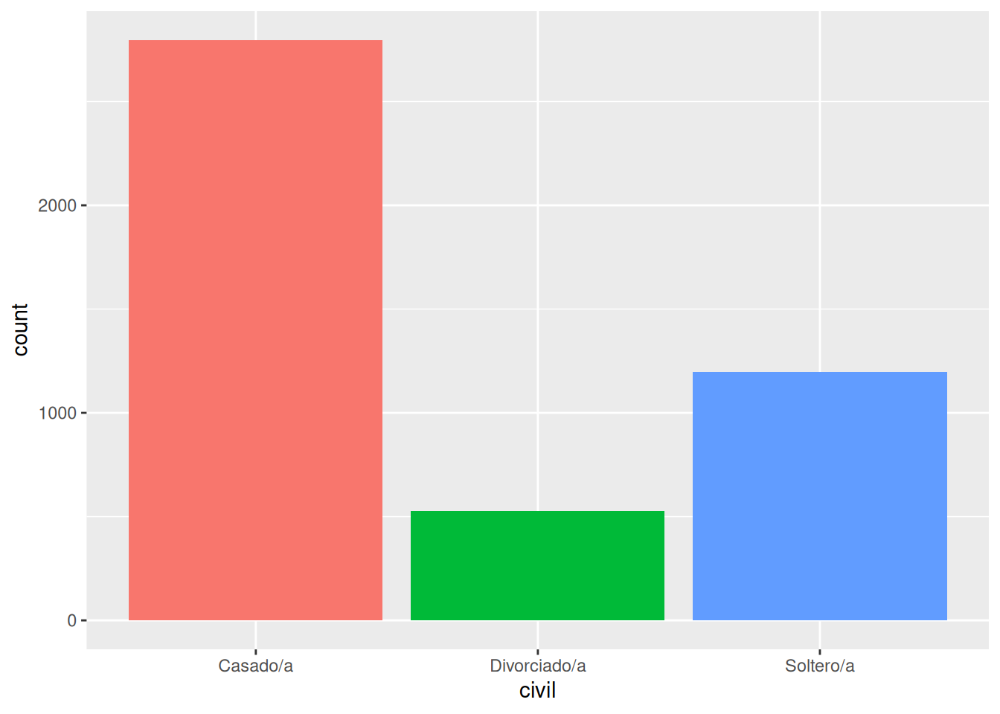
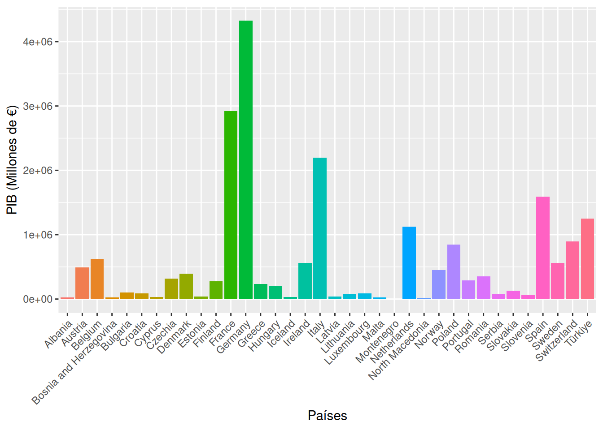
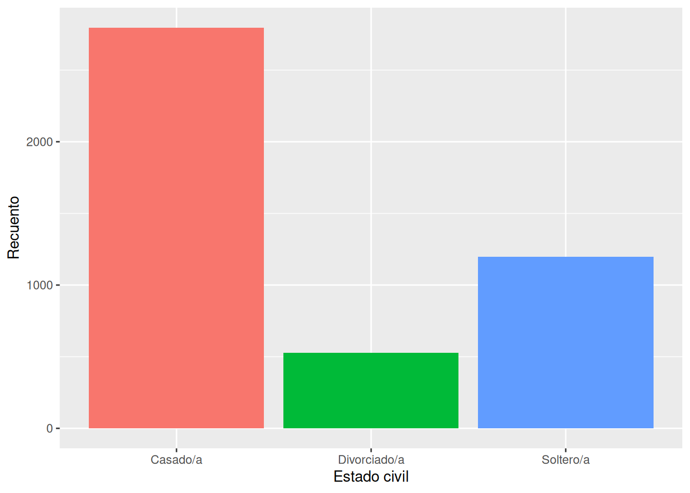

Chapter 4 Representación de datos en gráficos de barras
Para la representación de datos usaremos el paquete ggplot2 dentro del cual encontraremos la función ggplot. La función ggplot es muy potente y muy usada por todos los usuarios de R, pero también tiene una curva de aprendizaje inclinada. Aquí vamos a dar unos trucos para que sea más sencillo emplearla.
4.1 Consejo 1
ggplot funciona por capas. Primero establecemos los elementos básicos del gráfico y después le vamos añadiendo cosas.
# Primero hay que escribir la función ggplot con los argumentos 'data' y 'mapping'.
ggplot(data = datos_econ, mapping = aes(x = pais, y = pib)) +
# La mayoría de usuarios prefiere escribir simplemente ggplot(datos, aes(x = pais, y = pib))
geom_bar(stat = "identity")
# Geom bar indica que vamos a representar un diagrama de barras. Identity hace referencia al tipo de datos que tenemos.
#En este ejemplo con los datos_mkt geom_bar con "count" hace el recuento de todos los estados civiles que hay y los pone en barras.
ggplot(datos_mkt, aes(x = civil)) + geom_bar(stat = "count")# Vamos a guardar este gráfico en el objeto 'grafico'
grafico_econ <- ggplot(datos_econ, aes(x = pais, y = pib)) + geom_bar(stat = "identity")
grafico_econ

Ahora tenemos un gráfico de barras, pero necesitamos varias cosas: 1. Poner cada barra en un color 2. Girar las etiquetas de los nombres para que puedan leerse bien en grafico_econ 3. Personalizar las etiquetas en grafico_mkt
Primero, hay que añadir el argumento fill a aes con la variable que queremos usar para el código de colores. Para evitar que se muestre una leyenda con todos los colores usamos el argumento show.legend igual a “F” (falso).
grafico_econ <- ggplot(datos_econ, aes(x = pais, y = pib, fill = pais)) +
geom_bar(stat = "identity", show.legend = F)
grafico_econ
grafico_mkt <- ggplot(datos_mkt, aes(x = civil, fill = civil)) +
geom_bar(stat = "count", show.legend = F)
grafico_mkt
Posteriormente, podemos sumar la funcióntheme al gráfico para girar las etiquetas de los países:
grafico_econ <- grafico_econ + theme(axis.text.x = element_text(angle = 45, hjust = 1))
grafico_econ
En datos_mkt debemos cambiar las etiquetas de civilsi queremos que en el gráfico aparezcan las tres opciones bien etiquetadas (necesitamos modificar los valores de la variable en la base de datos):
datos_mkt$civil <- ifelse(datos_mkt$civil == "married", "Casado/a", datos_mkt$civil)
datos_mkt$civil <- ifelse(datos_mkt$civil == "single", "Soltero/a", datos_mkt$civil)
datos_mkt$civil <- ifelse(datos_mkt$civil == "divorced", "Divorciado/a", datos_mkt$civil)
grafico_mkt <- ggplot(datos_mkt, aes(x = civil, fill = civil)) +
geom_bar(stat = "count", show.legend = F)
grafico_mkt
Finalmente, con labs() podemos cambiar las etiquetas de los ejes:

